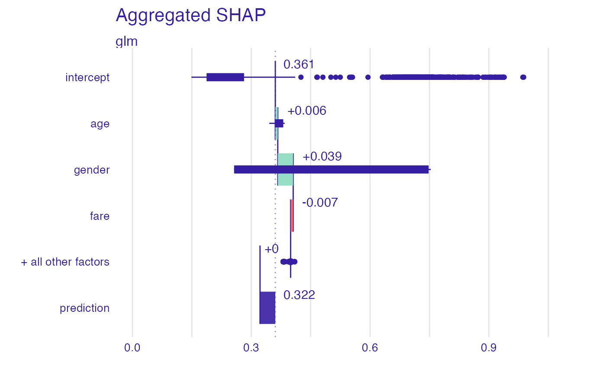

This function works in a similar way to shap function from iBreakDown but it calculates explanations for a set of observation and then aggregates them.
shap_aggregated(
explainer,
new_observations,
order = NULL,
B = 25,
kernelshap = FALSE,
...
)a model to be explained, preprocessed by the explain function
a set of new observations with columns that correspond to variables used in the model.
if not NULL, then it will be a fixed order of variables. It can be a numeric vector or vector with names of variables.
number of random paths; works only if kernelshap=FALSE
indicates whether the kernelshap method should be used
other parameters like label, predict_function, data, x
an object of the shap_aggregated class.
Explanatory Model Analysis. Explore, Explain and Examine Predictive Models. https://ema.drwhy.ai
library("DALEX")
set.seed(1313)
model_titanic_glm <- glm(survived ~ gender + age + fare,
data = titanic_imputed, family = "binomial")
explain_titanic_glm <- explain(model_titanic_glm,
data = titanic_imputed,
y = titanic_imputed$survived,
label = "glm")
#> Preparation of a new explainer is initiated
#> -> model label : glm
#> -> data : 2207 rows 8 cols
#> -> target variable : 2207 values
#> -> predict function : yhat.glm will be used ( default )
#> -> predicted values : No value for predict function target column. ( default )
#> -> model_info : package stats , ver. 4.2.3 , task classification ( default )
#> -> predicted values : numerical, min = 0.1490412 , mean = 0.3221568 , max = 0.9878987
#> -> residual function : difference between y and yhat ( default )
#> -> residuals : numerical, min = -0.8898433 , mean = 4.198546e-13 , max = 0.8448637
#> A new explainer has been created!
# \donttest{
bd_glm <- shap_aggregated(explain_titanic_glm, titanic_imputed[1:10, ])
bd_glm
#> $aggregated
#> variable label contribution position sign cumulative variable_name
#> 9 intercept glm 0.360768791 10 X 0.3607688 intercept
#> 1 age glm 0.006195355 9 1 0.3669641 age
#> 2 gender glm 0.038938300 8 1 0.4059024 class
#> 3 class glm 0.000000000 7 1 0.4059024 embarked
#> 4 embarked glm 0.000000000 6 1 0.4059024 fare
#> 5 fare glm -0.006521638 5 -1 0.3993808 gender
#> 6 parch glm 0.000000000 4 1 0.3993808 parch
#> 7 sibsp glm 0.000000000 3 1 0.3993808 sibsp
#> 8 survived glm 0.000000000 2 1 0.3993808 survived
#> 10 prediction glm 0.322156774 1 X 0.3221568
#> variable_value
#> 9
#> 1
#> 2
#> 3
#> 4
#> 5
#> 6
#> 7
#> 8
#> 10
#>
#> $raw
#> min q1 median mean q3
#> glm: age -0.01514903 0.0002353574 0.005275165 0.006195355 0.018497923
#> glm: class 0.00000000 0.0000000000 0.000000000 0.000000000 0.000000000
#> glm: embarked 0.00000000 0.0000000000 0.000000000 0.000000000 0.000000000
#> glm: fare -0.01889917 -0.0170260518 -0.002977667 -0.006521638 0.001316718
#> glm: gender -0.11039942 -0.1084437947 -0.107256514 0.038938300 0.379438843
#> glm: intercept 0.14904118 0.1887423364 0.201938260 0.322156774 0.280247495
#> glm: parch 0.00000000 0.0000000000 0.000000000 0.000000000 0.000000000
#> glm: prediction 0.18270403 0.2103113783 0.223698836 0.360768791 0.577815674
#> glm: sibsp 0.00000000 0.0000000000 0.000000000 0.000000000 0.000000000
#> glm: survived 0.00000000 0.0000000000 0.000000000 0.000000000 0.000000000
#> max
#> glm: age 0.02362156
#> glm: class 0.00000000
#> glm: embarked 0.00000000
#> glm: fare 0.01020851
#> glm: gender 0.38624848
#> glm: intercept 0.98789865
#> glm: parch 0.00000000
#> glm: prediction 0.71570558
#> glm: sibsp 0.00000000
#> glm: survived 0.00000000
#>
#> attr(,"class")
#> [1] "shap_aggregated" "list"
plot(bd_glm, max_features = 3)
#> Warning: Removed 260 rows containing missing values (`stat_boxplot()`).

# }